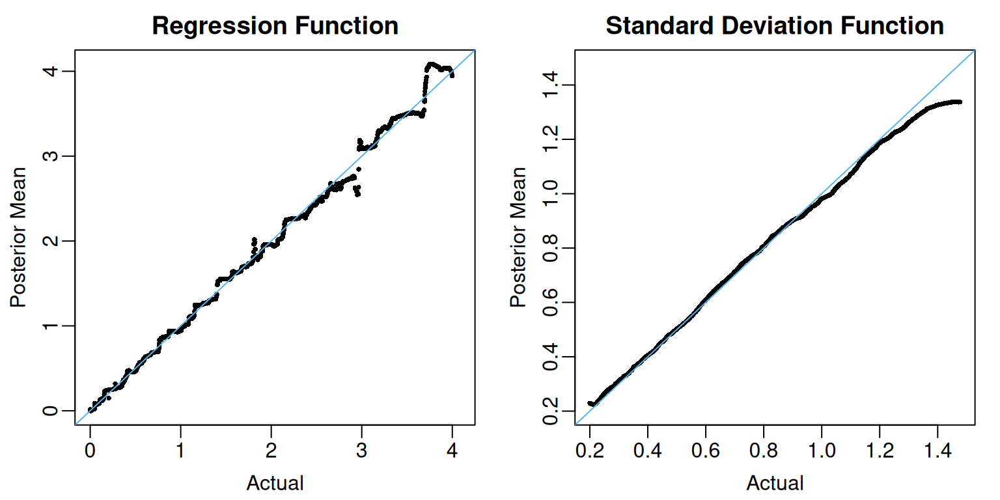
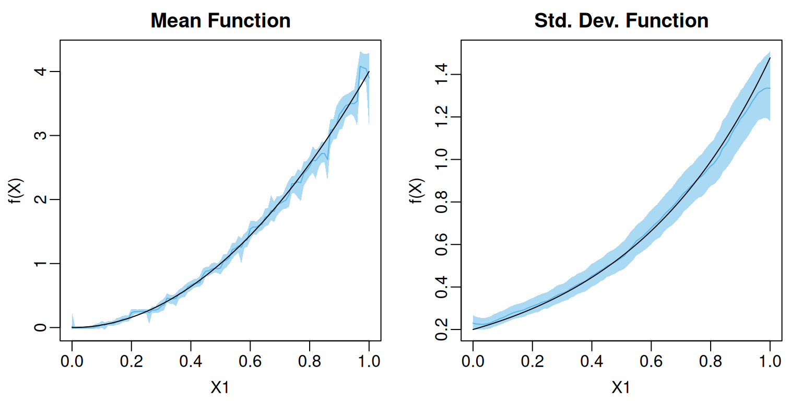

n_train <- 10000
set.seed(102)
train_data <- data.frame(Y = rep(NA, times = n_train))
train_data[,"X1"] <- runif(n = n_train, min = 0, max = 1)
mu_true <- function(df){
return(4 * df[,"X1"]^2)
}
sigma_true <- function(df){
return( exp(2 * df[,"X1"])/5)
}
mu_train <- mu_true(train_data)
sigma_train <- sigma_true(train_data)
train_data$Y <- mu_train + sigma_train * rnorm(n = n_train, mean = 0, sd = 1)Overview
Pratola et al. (2020) introduced the heteroskedastic BART model that asserts for some unknown functions and They approximated the mean function as a sum of regression trees and the standard deviation function as a product of regression trees. They placed conditionally conjugate inverse gamma priors on the leaf node parameters in the -ensemble. This allowed them to follow the same two-step regression tree update strategy introduced in Chipman et al. (1998) and used in the original BART paper): first update the tree structure marginally with Metropolis-Hastings and then conditionally draw new leaf node parameters from a conjugate distribution.
flexBART supports fitting heteroskedastic BART models but uses a slightly different prior specification and computational strategy than Pratola et al. (2020). First, flexBART models as a sum of regression trees and specifies independent mean-zero normal priors on the leaf node parameters for those trees. Because this specification is not conditionally conjugate, we cannot use the conventional two-step regression tree update. Instead, flexBART follows Linero (2025) and updates both the tree structure and leaf outputs in a single Metropolis-Hastings step. New leaf node parameters are proposed from a Laplace approximation of their conditional posterior distribution given the proposed tree structure.
Fitting a heteroskedastic BART model using flexBART is nearly identical to fitting a basic BART model with one important difference: we must specify a formula argument and provide data via the training_data argument. The key difference is that for heteroskedastic models, we need to include a sigma() term on the right-hand side of the ~ in the formula argument: ~ bart(.) + sigma(.).
Illustration
To illustrate, we first generate data from a heteroskedastic regression model where
We can now fit the model.
Computing Posterior Summaries
In addition to its yhat.train and yhat.train.mean attributions, which respectively contains MCMC draws and posterior means of the ’s, fit contains two additional attributions, sigma.train and sigma.train.mean, which respectively contains MCMC draws and posterior means of the ’s.
View Code
oi_colors <- palette.colors(palette = "Okabe-Ito")
par(mar = c(3,3,2,1), mgp = c(1.8, 0.5, 0), mfrow = c(1,2))
f_limits <- range(c(mu_train, fit$yhat.train.mean))
plot(mu_train, fit$yhat.train.mean,
pch = 16, cex = 0.5,
xlim= f_limits, ylim = f_limits,
xlab = "Actual", ylab = "Posterior Mean",
main = "Regression Function")
abline(a = 0, b = 1, col = oi_colors[3])
sigma_limits <- range(c(sigma_train, fit$sigma.train.mean))
plot(sigma_train, fit$sigma.train.mean,
pch = 16, cex = 0.5,
xlim= sigma_limits, ylim = sigma_limits,
xlab = "Actual", ylab = "Posterior Mean",
main = "Standard Deviation Function")
abline(a = 0, b = 1, col = oi_colors[3])
The coverage of the pointwise 95% posterior credible intervals for the ’s and ’s is also quite high.
train_mean_summary <-
data.frame(
MEAN = apply(fit$yhat.train, MARGIN = 2, FUN = mean),
L95 = apply(fit$yhat.train, MARGIN = 2, FUN = quantile, probs = 0.025),
U95 = apply(fit$yhat.train, MARGIN = 2, FUN = quantile, probs = 0.975))
train_sigma_summary <-
data.frame(
MEAN = apply(fit$sigma.train, MARGIN = 2, FUN = mean),
L95 = apply(fit$sigma.train, MARGIN = 2, FUN = quantile, probs = 0.025),
U95 = apply(fit$sigma.train, MARGIN = 2, FUN = quantile, probs = 0.975))
cat("Coverage for f:", round ( mean( mu_train >= train_mean_summary$L95 & mu_train <= train_mean_summary$U95), digits = 3), "\n")
#> Coverage for f: 0.958
cat("Coverage for sigma:", round ( mean( sigma_train >= train_sigma_summary$L95 & sigma_train <= train_sigma_summary$U95), digits = 3), "\n")
#> Coverage for sigma: 0.999Posterior Predictive Simulation
Posterior predictive simulation with heteroskedastic BART proceeds almost exactly like it does with homoskedastic BART. In the code below, we loop over the training observations and for each MCMC sample of , we draw an independent and compute
nd <- nrow(fit$yhat.train)
ystar_train <- matrix(nrow = nd, ncol = n_train)
for(i in 1:n_train){
ystar_train[,i] <- fit$yhat.train[,i] + rnorm(n = nd , mean = 0, sd = fit$sigma.train[,i])
}
ystar_quantiles <-
apply(ystar_train, MARGIN = 2,
FUN = quantile, probs = c(0.025, 0.975)) |>
t()
mean( train_data$Y >= ystar_quantiles[,"2.5%"] & train_data$Y <= ystar_quantiles[,"97.5%"])
#> [1] 0.9566Making Predictions
We can use flexBART’s prediction method (predict.flexBART(), accessed via the generic predict()) to make predictions about and evaluated at new inputs. In the code below, we create a grid of equally-spaced values running from 0 to 1. We then use predict() to compute posterior samples of these evaluations, which we then compare to the actual values.
# Predicted Draws
test_df <- data.frame(X1 = seq(0, 1, by = 0.01))
test_pred <- predict(object = fit, newdata = test_df)
# Actual values
mu_test <- mu_true(test_df)
sigma_test <- sigma_true(test_df)The yhat and sigma attributes of pred respectively contains MCMC samples for evaluations of the mean and standard deviation functions. In the code below, we compute the posterior means and 95% credible intervals for both functions on the test data.
test_mean_summary <-
data.frame(
MEAN = apply(test_pred$yhat, MARGIN = 2, FUN = mean),
L95 = apply(test_pred$yhat, MARGIN = 2, FUN = quantile, probs = 0.025),
U95 = apply(test_pred$yhat, MARGIN = 2, FUN = quantile, probs = 0.975))
test_sigma_summary <-
data.frame(
MEAN = apply(test_pred$sigma, MARGIN = 2, FUN = mean),
L95 = apply(test_pred$sigma, MARGIN = 2, FUN = quantile, probs = 0.025),
U95 = apply(test_pred$sigma, MARGIN = 2, FUN = quantile, probs = 0.975))Since both and depends only on we can visualize the posterior mean and pointwise credible interval.
Code
f_limits <- range(c(mu_test, test_mean_summary))
sigma_limits <- range(c(sigma_test, test_sigma_summary))
par(mar = c(3,3,2,1), mgp = c(1.8, 0.5, 0), mfrow = c(1,2))
plot(1, type = "n", xlim = c(0,1), ylim = f_limits,
main = "Mean Function", xlab = "X1", ylab = "f(X)")
polygon(x = c(test_df$X1, rev(test_df$X1)),
y = c(test_mean_summary$L95, rev(test_mean_summary$U95)),
col = adjustcolor(oi_colors[3], alpha.f = 0.5), border = NA)
lines(x = test_df$X1, y = test_mean_summary$MEAN,
col = oi_colors[3])
lines(test_df$X1, y = mu_test)
plot(1, type = "n", xlim = c(0,1), ylim = sigma_limits,
main = "Std. Dev. Function", xlab = "X1", ylab = "f(X)")
polygon(x = c(test_df$X1, rev(test_df$X1)),
y = c(test_sigma_summary$L95, rev(test_sigma_summary$U95)),
col = adjustcolor(oi_colors[3], alpha.f = 0.5), border = NA)
lines(x = test_df$X1, y = test_sigma_summary$MEAN,
col = oi_colors[3])
lines(test_df$X1, y = sigma_test)